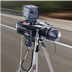

Дополнительные функции радар-детектора
-
Уникальный модуль exd plus
Обеспечивает максимальную дистанцию обнаружения полицейских радаров в диапазонах К, Ка и М.
-
Детектирование multaradar cd/ct
Neoline X-COP 9100s – это первый в мире гибрид, который детектирует комплексы MultaRadar CD и CT.
-
Отключение радарного модуля
Радарный блок может быть легко отключен простым движением руки и устройство продолжит работу в виде GPS информатора.
-
Голосовое оповещение
Neoline X-COP 9100s оповестит о типе полицейского радара, разрешенной скорости на участке дороги, выдаст информацию о расстоянии к радару и средней скорости .
-
Включение отдельных типов точек gps
Гибкость настроек позволяет включать и выключать отдельные точки GPS, такие как: посты ДПС, камеры системы «Автодория», стационарные радары «Стрелка», муляжи радарных комплексов и др.
-
Дальность gps оповещений
Дальность оповещений к полицейским радарам в базе GPS может быть установлена исходя из ваших предпочтений
Типы полицейских радаров и камер
-

Новейшие маломощные радары Multa - диапазон M MultaRadar CD, CT, CD moving
-

Европейские радары - диапазон Ka Ramer, Multanova 6F, Stalker и др.
-
Контроль мгновенной и средней скорости Кордон-Темп, Скат-Риф, Стрелка Плюс, Автоураган-ВСМ, Вокорд, Циклоп и др.
-
Контроль средней скорости Автодория, Стрелка-Плюс и др.
-
Мобильная засада ДПС Скат, Оскон, Кордон, Крис, Арена, Полискан и др.
-
Маломощные радары Кордон, робот, Арена, Кречет, Gatso, Mesta и др.
-
Лазерные измерители скорости Полискан, Амата и др.
-
Стрелка Стрелка-СТ, Стрелка-Плюс, Стрелка-М
-
Безрадарные комплексы Автоураган-ВС, Вокорд-Трафик, Стрит Фалькон, Стрелка Видеоблок, Птолемей, Интегра КДД и др.